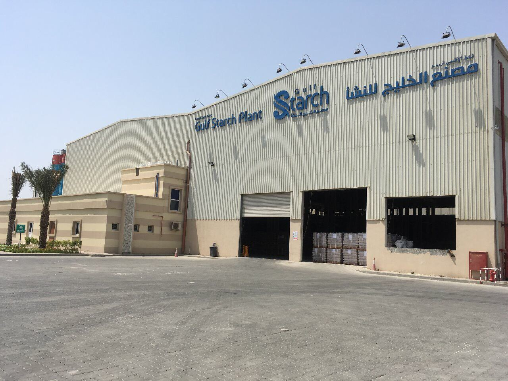
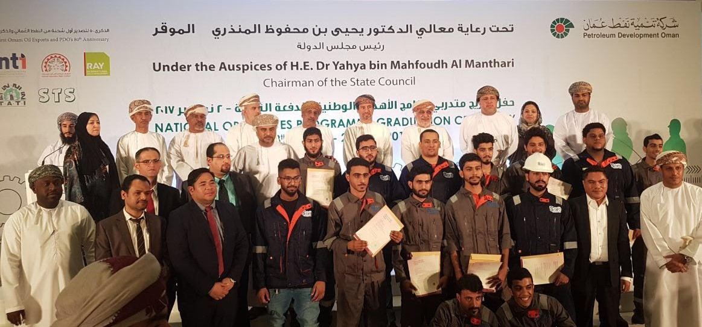

Gulf Starch makes drilling starch in Oman – Oman’s only drilling-starch maker, part of United Business Group.
The plant has a production capacity of 10,000 MT per year. It has been designed using the latest technology and its operation is fully automated.
It has its own on-site, well-equipped QA/QC laboratory, and HSE is integrated in all operations and buildings to ensure a safe and professional work environment.
Starch is used as a fluid-loss control additive in the majority of water-based mud used in PDO drilling operations. Localine supplies Gulf Starch’s HT Starch and Drilling Starch to PDO.
The plant on the Sohar Industrial Estate was officially inaugurated in December 2016 (Al Fahal, PDO, Dec 2016). Current site details [to confirm]



Contact: [to confirm]